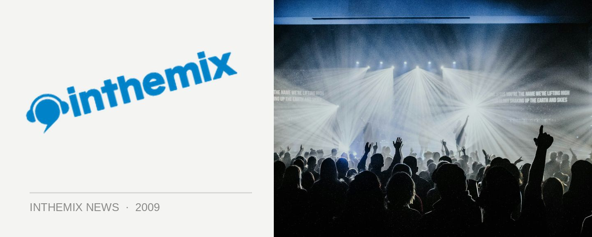

Foreshore first round lineup announced!
Voted your #1 event for the ACT in last year’s Sony inthemix 50 poll, the Foreshore Festival has decidedly cemented itself as one of the country’s best music festivals – and ITM can now reveal the massive lineup that’ll be taking over the capital on Saturday November 28th!
Foreshore has pulled some mighty impressive lineups in its short history, but there’s little doubt this year’s list of international acts is the biggest yet. Deadmau5 is a favourite of Australian audiences after tearing it up on the festival circuit earlier this year, while Swedish House Mafioso Axwell will be returning for his first tour in nearly two years, joined by fellow countryman John Dahlback.
Joining them will be breaks heroes the Stanton Warriors, noise merchants Crookers as well as Miss Kitten & The Hacker and Zombie Nation. Promoters Friction and Lexington Music have confirmed ticket sales will be capped below 2008’s capacity, and have promised even more bars and amenities so this year’s party should kick ass in a major fashion.
First release tickets will be made available exclusively to www.lexingtonmusic.com.au members on Tuesday August 11th at 9am at ITM for the super-low price of $69.95 +BF. These are expected to be snapped up extremely quickly, and the festival goes onsale to the general public from ITM at 9am Thursday August 13th starting at $79.95 +BF, with final release tickets setting you back $99.95 +BF.
Foreshore Festival 2009 returns to Commonwealth Place, Canberra on Saturday November 28th. Check out the first round lineup and stay tuned for more details as well as the much anticipated second announcement, which includes the HEADLINER of the festival:
Deadmau5
Axwell
Crookers
Stanton Warriors
Miss Kittin & The Hacker
John Dahlback
Zombie Nation